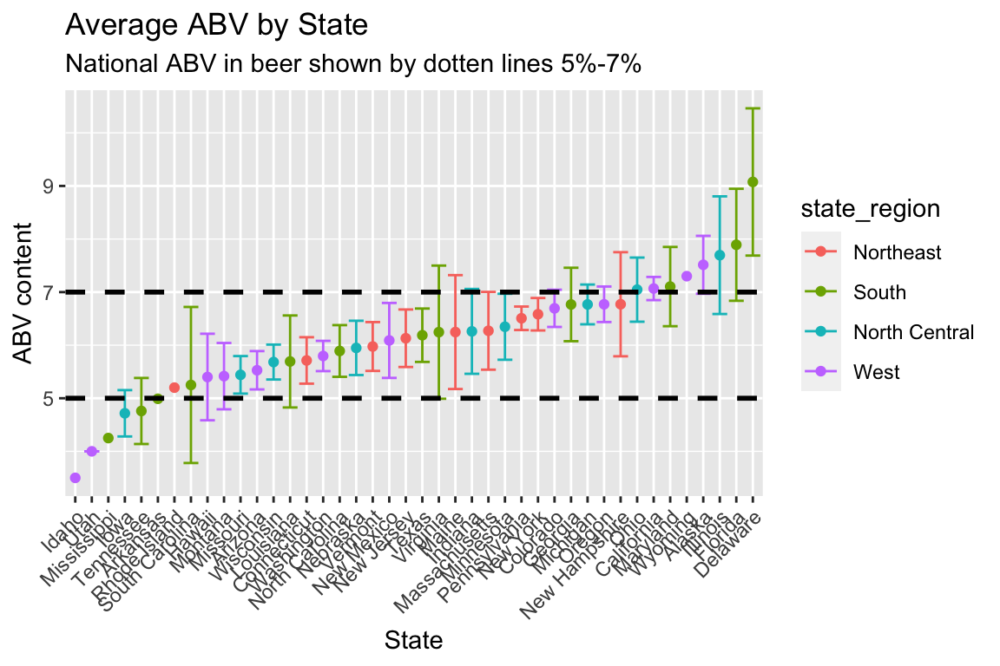
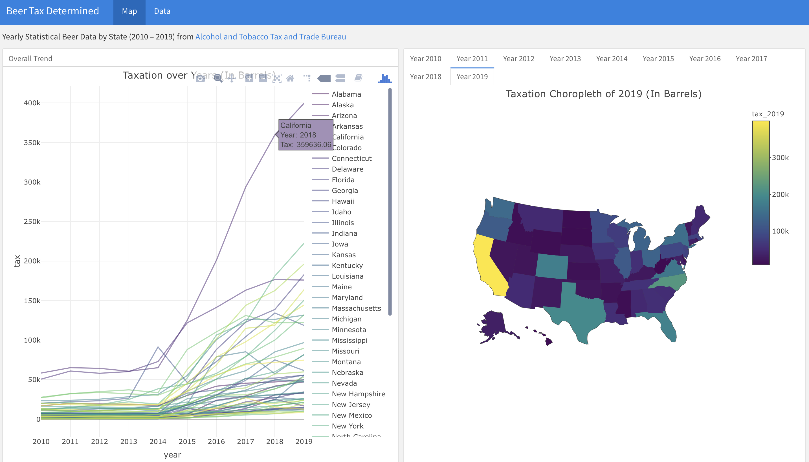
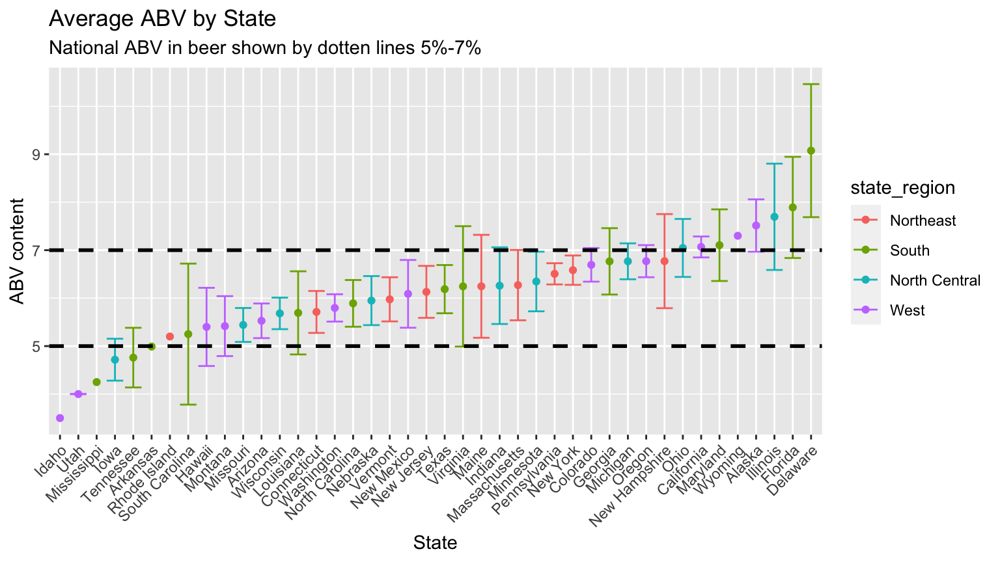
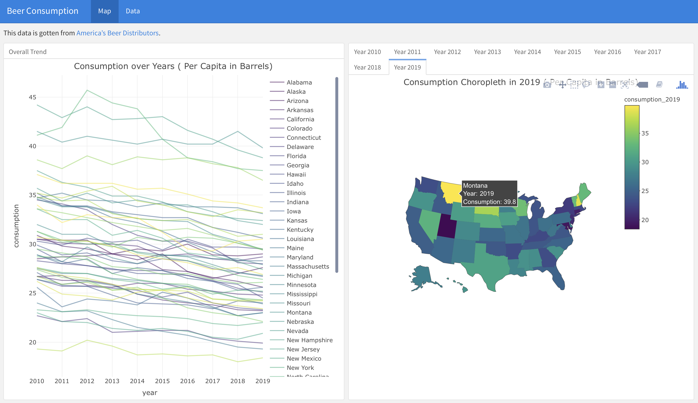
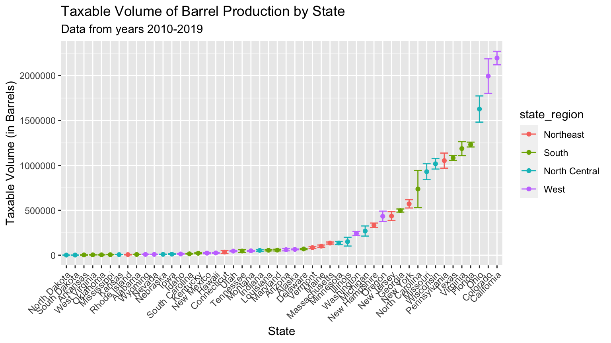
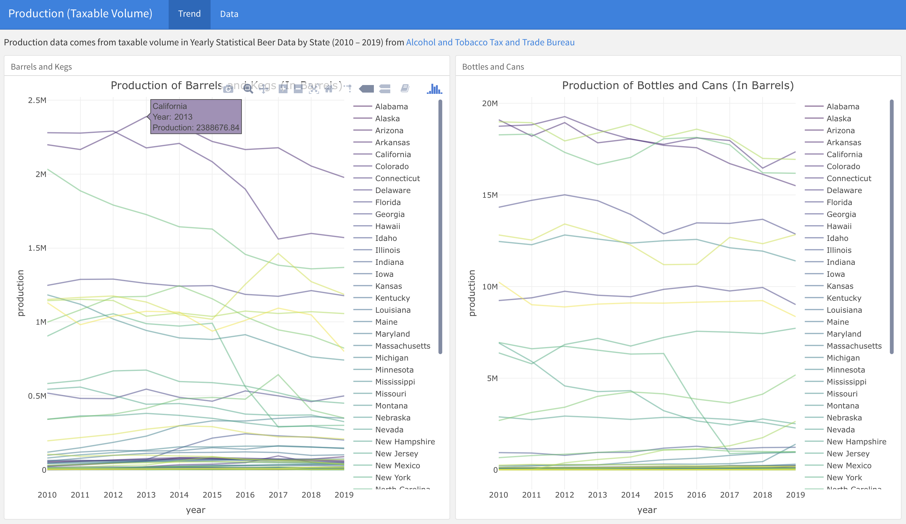

Statistics have been intertwined with beer since the 20th century. During his time at Guinness Brewing Company of Dublin, Ireland mathematician Gosset published a paper in 1904 about using a Poisson distribution to model the amount of yeast cells in the Beer fermentation process (The Lady Tasting Tea). This helped lead to a much more accurate assessment of the concentration of yeast cells in the beer mash and thus a much more consistent product was produced by Guinness. However, due to not wanting to leak company secrets Guinness did not let Gosset publish in appropriate papers, this led him to publish his work under the name “Student” while he worked under Pearson (The Lady Tasting Tea).
Beer has been around for centuries. When the Mayflower set sail from America they loaded up on all the essentials including lots of beer and when they ran out they decided to stop as soon as possible landing them on Plymouth rock. “We could not now take time for further search… our victuals being much spent, especially our beer…” Beer & American History. To their surprise, the Native Americans had been brewing beer from maize way before they invaded their land. After that point brewers have been popping up all over the United States. Beer had become so important in the establishment of the American nation that “George Washington’s first acts as Commander of the Continental Army was to proclaim that every one of his troops would receive a quart of beer with his daily rations” Beer & American History.
Fast forward to after the prohibition the American Government continues to control the consumption and production of Beer through regulations and taxes. The Alcohol and Tobacco Tax and Trade Bureau protects “the public by enforcing the provisions of the Federal Alcohol Administration Act” TTB.gov. This helps regulate people who engage in the alcohol beverage industry by requiring people to file an application before engaging in business. For Breweries in particular they are required to file the yearly Brewer’s Report of Operations (TTB F 5130.9) and the Quarterly Brewer’s Report of Operations (TTB F 5130.26) TTB.gov Statistics. The Breweries must report this information no later than 15 days after the close of the applicable reporting period TTB.gov Statistics. Through this reporting and taxation, the U.S. profits enormously off of this one beverage. From a report, it is estimated that the American beer industry contributes to “more than $328 billion to our economy” Beer Institute. The jobs it creates are in a wide range of areas such as farming, manufacturing, construction, transportation, service, and more. Since beer plays such an important role in the U.S. economy it is important to analyze the publicly available government data all about taxation and production TTB.gov. It is also equally interesting to look at the types of beer produced, location of breweries across the globe using an open-source API data set Open Beer Dataset. Our goal in this project is to get a better understanding of the taxation, consumption and production of beer by each state to get a better understanding of how the United States profits off beer.
What questions are you trying to answer? How did these questions evolve over the course of the project? What new questions did you consider in the course of your analysis?
Yearly Statistical Beer Data by State (2008 – 2019) from Alcohol and Tobacco Tax and Trade Bureau. This aggregated data contained records on Tax Determined, Taxable Volume of Bottles and Cans, Taxable Volume of Barrels and Kegs each year for each state in barrels.
#install.packages("gdata")
site1 = "http://www.ttb.gov/images/pdfs/statistics/aggregated/aggr-data-beer_2008-2019.xlsx"
#Tax Determined (in Barrels)
tax_df =
gdata::read.xls(site1, sheet = 1, header = T, skip = 6, nrow = 52) %>% #skip note
janitor::clean_names() %>%
select(1:13) %>%
as_tibble() %>%
rename_with( ~ sub("x", "", .x)) %>% # rename column names
mutate(state = factor(state)) %>% #state as factor
mutate_at(vars(2:13), ~ gsub(",", "", .x)) %>% #remove "," in tax values
mutate_at(vars(2:13), as.numeric) # tax values as numeric
# Taxable Volume of Bottles and Cans* (in Barrels)
taxable_cans_df =
gdata::read.xls(site1, sheet = 2, header = T, skip = 4, nrow = 52) %>%
janitor::clean_names() %>%
select(1:13) %>%
as_tibble() %>%
rename_with( ~ sub("x", "", .x)) %>%
mutate(state = factor(state)) %>%
mutate_at(vars(2:13), ~ gsub(",", "", .x)) %>%
mutate_at(vars(2:13), as.numeric)
# Taxable Volume of Barrels and Kegs*
taxable_barrels_df =
gdata::read.xls(site1, sheet = 3, header = T, skip = 4, nrow = 52) %>%
janitor::clean_names() %>%
select(1:13) %>%
as_tibble() %>%
rename_with( ~ sub("x", "", .x)) %>%
mutate(state = factor(state)) %>%
mutate_at(vars(2:13), ~ gsub(",", "", .x)) %>%
mutate_at(vars(2:13), as.numeric)
# DT::datatable(
# head(tax_df[,-c(2,3)]),
# caption = 'Head of the tax_df dataframe, (Cummulative Tax Data)'
# )
# DT::datatable(
# head(taxable_cans_df[,-c(2,3)]),
# caption = 'Head of the taxable_cans_df dataframe'
# )
# DT::datatable(
# head(taxable_barrels_df[,-c(2,3)]),
# caption = 'Head of the taxable_barrels_df dataframe'
# )
# write_csv(tax_df, "data_import_cleaning/tax.csv")
# write_csv(taxable_cans_df, "data_import_cleaning/tax_cans.csv")
# write_csv(taxable_barrels_df, "data_import_cleaning/tax_barrels_df.csv")Open Beer database from Opendatasoft. This dataset contains information of each beer product, including product name, universal product code, style, category, brewer along with its address and website, percentage of alcohol by volume, bitterness from hops in a beer, beer color, and description in text.
beer_specific =
read_delim("https://public-us.opendatasoft.com/explore/dataset/open-beer-database/download/?format=csv&timezone=America/New_York&lang=en&use_labels_for_header=true&csv_separator=%3B", delim = ";") %>% # sep = ";"
janitor::clean_names() %>%
filter(country == "United States") %>% # only investigate beer in US
separate(coordinates, c("latitude", "longitude"), sep = ",") # separate geographic info
# printing the head of the table
# beer_specific_smaller = beer_specific %>%
# select(name, id, alcohol_by_volume, style, category, city, state, latitude, longitude)
# DT::datatable(
# head(beer_specific_smaller),
# caption = 'Head of the beer_specific dataframe'
# )
# write_csv(beer_specific, "data_import_cleaning/beer.csv")The third dataset that was used is from the American Beer Distributors. This website aims to collect data on beer consumption, taxation and shipment. They have produced a number of there own reports but they have the data they used avaiable in pdf form. The pdf document are Summary of Effective State Excise Tax Rates by State and Shipments of Malt Beverages and Per Capita Consumption by State. Due to the difficult of working with pdf documents in R and pdf to excel online file converter was used to access this data. These files include data on taxation rate per barrel, shipment of beer, consumption of beer per capita, and population over 21 years of age. Because the pdf converters were used the data cleaning process was made much similar then if we used R to read the pdf document directly.
In our analysis we decide to only focus on the years from 2010-2019 to make it consisten with the other datasets.
# first pdf document
# We need to initalize the first year to make a dataframe.
state_df =
readxl::read_excel("data_import_cleaning/2003_and_2019_State_data_Per_Capita_perpage.xlsx",
sheet = 1, range = "A5:F56") %>% # only want specific range of cells
janitor::clean_names() %>%
mutate(
year = rep(2003, 51) # adding in a year variable
)
# iterate over the next couple of years which are different excel sheets.
for( i in 2:17) { # years are (2003+1, 2019)
state_df = rbind(state_df, readxl::read_excel(
"data_import_cleaning/2003_and_2019_State_data_Per_Capita_perpage.xlsx",
sheet = i, range = "A5:F56") %>%
janitor::clean_names() %>%
mutate(
year = rep(2002+i, 51) # adding in a year variable
)
)
}
#write_csv(state_df, "data_import_cleaning/state_df.csv") # save into a clean cvs file
## Second pdf document
# getting the first year to initialize the dataframe.
state_tax_df =
readxl::read_excel("data_import_cleaning/Beer_Excise_Tax2019Revised_July_2020perpage.xlsx",
sheet = 1, range = "A5:G56") %>% # only want specific range of cells
janitor::clean_names() %>%
mutate(
year = rep(2009, 51) # adding in a year variable
)
# iterate over the next couple of sheet to get all the years
for( i in 2:11) { # years are (2009+1, 2019)
state_tax_df = rbind(state_tax_df, readxl::read_excel(
"data_import_cleaning/Beer_Excise_Tax2019Revised_July_2020perpage.xlsx",
sheet = i, range = "A5:G56") %>%
janitor::clean_names() %>%
mutate(
year = rep(2008+i, 51) # adding in a year variable
)
)
}
#write_csv(state_tax_df, "data_import_cleaning/state_tax_df.csv") # save into a clean cvs file# DT::datatable(
# head(state_tax_df),
# caption = 'Head of state_tax_df dataframe, (Tax per Barrel Data)'
# )# DT::datatable(
# head(state_df),
# caption = 'Head of state_df dataframe'
# )Visualizations, summaries, and exploratory statistical analyses. Justify the steps you took, and show any major changes to your ideas. Each of us add our part, should include code that can generate the plot(please note file path), comment on the plots and answer the above corresponding initial questions part. I will try to revise them in a reasonable order.
The American Beer Distributors also collected information tax per barrel unit. This measurement focuses on more than just breweries but rather taxation of beer sold anywhere. The measurement that we are displaying is an effective excise tax with a volume adjustment. In the dataset, there were two other similar variables about tax one adjusting for state tax and another for local laws about tax. However, we chose to go with the volume adjusted measurement since they all reported very similar number. his graph also shows the effective excise tax volume adjusted measurement from the year 2010 to 2019 with the corresponding confidence intervals. This can help show which states are different from each other when it comes to tax per barrel collected.
region_name = tibble(state = state.name, state_region= state.region)
perbarrel_tax = state_tax_df %>%
filter(state != "District of Columbia") %>% # we don't want this in our moving graph
filter(year > 2009) %>%
group_by(state) %>%
mutate(
tax = adjusted
) %>%
summarize(
mean_tax = mean(tax, na.rm=TRUE),
CI_lower = mean(tax, na.rm=TRUE) - 1.96 * sd(tax, na.rm=TRUE)/sqrt(length(tax)),
CI_upper = mean(tax, na.rm=TRUE) + 1.96 * sd(tax, na.rm=TRUE)/sqrt(length(tax))
) %>%
right_join(., region_name, by = "state") %>% # joining the regions in so we can color the graph
mutate(
#state = abbr2state(state), # making the states into names instead of abbs
state = fct_reorder(state, mean_tax) # ordering the states according to mean_barrels
)
perbarrel_tax %>% # plotting!!
ggplot(aes(x = state, y = mean_tax,color=state_region)) +
geom_point() +
geom_errorbar(aes(ymin = CI_lower, ymax = CI_upper)) +
theme(axis.text.x = element_text(angle = 45, hjust = 1)) +
#theme(legend.position = "none") +
labs(
title = "Average Tax Per Barrel by State",
subtitle = "Data from years 2010-2019",
y = "Tax per Barrel",
x = "State"
)
Wyoming has the lowest tax per barrel average of 0.59 dollars, while Alabama has the highest tax per barrel average of 32.94 dollars. The biggest ranges of values go to Tennessee with Washington and Delaware also having a range of values. These big ranges of value make sense because in the moving graph before these states had the most motion in moving ranks. The states that have no confidence intervals are the states that did not see changes to their tax per barrel between the years 2010-2019. Just like in the graph above we see that the South and West seem to be the dominant states in the higher tax per barrel rates with the North Central state tending to have lower tax per barrel.
For detailed visualization of cumulative tax for each state over the years, you can have a look at our data exploration dashboard under “Taxation” tab. For the first page of the dashboard, we provided interactive tax trend and choropleth plots for each year, click on the point or state you can see hover information. Besides, tax data table is attached on the second page of the dashboard. Here is a sample page of dashboard. .
Code for generating all the dashboards can be found here
The state with the lowest amount of taxes collected from breweries is North Dakota and South Dakota is a close second for the lowest amount of taxes. Both of these states are located in the North Central part of America. The state with the largest amount in cumulative taxes collected from breweries is California it also has most increase over the years. In second place for top cumulative tax is Colorado. These top two states are in the West part of the United States. This measurement of tax does not account for the population base or size of the state. It makes sense that California is at the top because it a state with a lot of people and that North and South Dakota is at the bottom because the population mass is much less. Overall, looking at the states, the states with a smaller population has a smaller cumulative beer tax rate.
More interesting and supporting plots can be found on Taxation tab on our website.
Alcohol by volume (ABV) is defined to be the volume percent of alcohol (ethanol) contained in a given volume of an alcoholic beverage. In our project, we are interested in exploring the pattern of ABV in beer produced in each state. This average is considering all beer that do have alcohol content. Zero values were excluded because they represented non-alcoholic beer. The color of the state represents the state region. The data we are using is of course not a complete list of every single beer made in each state but rather a sample.
beer = read_csv("./data_import_cleaning/beer.csv")
beer %>%
filter(alcohol_by_volume !=0 ) %>%
group_by(state) %>%
filter(state %in% c(state.name) ) %>%
summarize(
mean_ABV = mean(alcohol_by_volume),
CI_lower = mean(alcohol_by_volume, na.rm=TRUE) -
1.96 * sd(alcohol_by_volume, na.rm=TRUE)/sqrt(length(alcohol_by_volume)),
CI_upper = mean(alcohol_by_volume, na.rm=TRUE) +
1.96 * sd(alcohol_by_volume, na.rm=TRUE)/sqrt(length(alcohol_by_volume))
) %>%
right_join(., region_name, by = "state") %>% # joining the regions in so we can color the graph
mutate(
state = fct_reorder(state, mean_ABV) # ordering the states according to mean_ABV
) %>% # plotting!!
drop_na(mean_ABV) %>%
ggplot(aes(x = state, y = mean_ABV,color=state_region)) +
geom_point() +
geom_errorbar(aes(ymin = CI_lower, ymax = CI_upper)) +
theme(axis.text.x = element_text(angle = 45, hjust = 1)) +
#theme(legend.position = "none") +
labs(
title = "Average ABV by State",
subtitle = "National ABV in beer shown by dotten lines 5%-7% ",
y = "ABV content",
x = "State"
) +
geom_hline(yintercept=5, linetype="dashed",
color = "black", size=1)+
geom_hline(yintercept=7, linetype="dashed",
color = "black", size=1)
The dotted lines at 5% and 7% represent the national average of Alcohol content in beer according to the National Consumers League. From this graph, we see that 5 states have averages well below that range (Idaho, Utah, Mississippi, Iowa and Tennessee) and 6 states have an average well above that range (Maryland, Wyoming, Alaska, Illinois, Flordia and Deleware). Looking specifically at Delaware the 95% lower bound of its confidence interval is well above 7% implying that this state produces beer that has an alcohol content larger than the national average in a regular beer.
For detailed visualization of consumption per Capita for each state, you can have a look at our data exploration dashboard under “consumption” tab. For the first page of the dashboard, we provided interactive consumption trend and choropleth plots for each year, click on the point or state you can see hover information. Besides, consumption data table is attached on the second page of the dashboard. Here is a sample page of dashboard. .
First, we see Utah constantly at the bottom throughout all years. The top per Capita consumption rates are from New Hampshire, Montana, and North Dakota. These three states are very interesting because they have been towards the bottom of the list on the taxation and production page. One explanation is that these three states do not have very big populations so consumption is divided by a smaller number making the measurement look larger. The second explanation is that all these states have a low tax per barrel cost therefore people from out of state might travel to purchase alcohol. Interviewing friends and family from the North East traveling to New Hampshire to buy alcohol common because they do not have sales tax. There are 5 states that do not have sales tax as of 2019 Alaska, Delaware, Montana, New Hampshire, and Oregon. This helps explain why New Hampshire and Montana are so high up on the list, not only do they have no sales tax but they also have small populations making their consumption per capita large. According to the same source, California has the highest state-level sales tax which helps explain why it is so low on our rankings here but high up in the ranking on the Taxation and Production page.
More interesting and supporting plots can be found on Consumption tab on our website.
This graph looks at the taxable volume of beer Barrels and Kegs produced by state recorded in barrel units. The points represent the mean production from 2010-2019 and the lines show corresponding confidence intervals. The data comes from the Alcohol and Tobacco Tax and Trade Bureau data set. This visualization helps us see the difference in barrel and kegs production of each state. The colors represent the state’s region and they will stay consistent through this page.
# setting up the regions
region = tibble(state = state.abb, state_region= state.region)
barrel = taxable_barrels_df %>% # first we need to pivot the data
filter(state != "total") %>%
pivot_longer(
c(`2008`:`2019`),
names_to = "year",
values_to = "barrels"
)%>%
filter(year > 2009) %>% # we want to only focus on years 2010-2019
group_by(state) %>%
mutate(
barrels_log = barrels
) %>%
summarize(
mean_barrel = mean(barrels_log, na.rm = TRUE), # finding the mean barrels
CI_lower = mean(barrels_log, na.rm = TRUE) -
1.96 * sd(barrels_log, na.rm = TRUE)/sqrt(length(barrels_log)), # finding the lower CI
CI_upper = mean(barrels_log, na.rm = TRUE) +
1.96 * sd(barrels_log,na.rm = TRUE)/sqrt(length(barrels_log)) # finding the upper CI
) %>%
right_join(., region, by = "state") %>% # joining the regions in so we can color the graph
mutate(
state = usdata::abbr2state(state), # making the states into names instead of abbs
state = fct_reorder(state, mean_barrel) # ordering the states according to mean_barrels
)
barrel %>% # plotting!!
ggplot(aes(x = state, y = mean_barrel,color=state_region)) +
geom_point() +
geom_errorbar(aes(ymin = CI_lower, ymax = CI_upper)) +
theme(axis.text.x = element_text(angle = 45, hjust = 1)) +
labs(
title = "Taxable Volume of Barrel Production by State",
subtitle = "Data from years 2010-2019",
y = "Taxable Volume (in Barrels)",
x = "State"
)
The state with the least amount of taxable barrel volume is North Dakota (1740.12) with South Dakota (2033.03) very close by. The state with the most barrel production in California (2,195,187) with Colorado (1,994,354) in second place. The trend in this graph appears to be exponential growth. The upper half of the states seem to produce a significant amount more barrels compare to the lower states. This cut off seem to be around Washington. There is a huge gap between Florida and Ohio. The states Ohio, Colorado, and California seem to make an exponential amount more of taxable barrels than the other states.
These findings also make sense comparing the locations of the top states to the bottom states. The brewery location interactive map showed that states on coastlines or on the edges of the United States has more brewery location, therefore they produce more taxable volume. The states in middle America did not have a lot of brewery location so it makes sense that they don’t produce a lot of taxable volume of beer.
For detailed visualization of production trend for each state, you can have a look at our data exploration dashboard under “production” tab. For the first page of the dashboard, we provided interactive production trend plots for “Barrels and Kegs” and “Bottles and Cans”, click on the point you can see hover information. Besides, production data table is attached on the second page of the dashboard. Besides, production data table is attached on the second page of the dashboard. Here is a sample page of dashboard. .
More interesting and supporting plots can be found on Production tab on our website.
We focus on two analyses in our project. One is to compare tax differences by jurisdiction group over time. The other is to model taxation under the regression analysis framework. More details can be found in the Analysis section on our website (link to be inserted here).
1. Preliminary Analysis – Tax differences by jurisdiction group
Motivation
Differing on the degree of control on liquor wholesales and retail, states can be categorized into two types – control jurisdiction and licensed jurisdiction, with licensed states having more control. Such categorization may lead to difference in taxation. Therefore, we are interested in examining if there is any difference in taxation by these two groups of states.
Procedures
We performed t-test for each year from 2010 to 2019 and would like to see if there is any significant difference in the cumulative tax between control states and licensed states.
Findings
Based on the test results, however, we did not find sufficient evidence showing any significant difference between two jurisdiction groups in both the cumulative tax collected and the tax per barrel from 2010 to 2019.
We speculated that there may be some confounding variables that could potentially affect the relationship between taxation and the jurisdiction group. Therefore, we decided to further perform regression analysis. Specifically, we would like to explore more regarding the relationship between taxation and jurisdiction group, year, shipments, population, and consumption.
2. Regression Analysis
Variables of interest
Our explaining variables of interest include jurisdiction group, year, shipments, population, and consumption. Their detailed explanation are as below.
Model
Our intended model is
\[Tax = \beta_0 + \beta_1 \ Group + \beta_2 Year + \beta_3 \ Shipments + \beta_4 \ Population+ \beta_5 \ Consumption\]
We looked at both the cumulative tax collected and the tax per barrel.
Results & Findings
In the model of the tax per barrel, all the variables are not significant at the 5% significance level; further the model is poorly fitted as the adjusted \(R^2\) is approximately 0. Therefore, we will mostly focus on the cumulative tax collected.
In the model of cumulative tax collected, we found that:
# Load datasets
state_df = read_csv("data_import_cleaning/state_df.csv")
tax_df = read_csv( "data_import_cleaning/tax.csv")
# state and its abbreviation
# https://abbreviations.yourdictionary.com/articles/state-abbrev.html
state_ref =
read.delim("./data_import_cleaning/state_abbreviation.txt", header = F) %>%
separate(V1, into = c("state", "state_abbrv"), sep = " - ")
# jurisdiction information
license =
read_table("./data_import_cleaning/license_jurisdiction_modified.txt") %>%
unlist()
control =
read_table("./data_import_cleaning/control_jurisdiction_modified.txt") %>%
unlist()
# tidy tax data: state with abbreviation + group
# to be consistent with other plots, remove year 2008, 2009 (starting year is 2010)
tax_df_group =
left_join(tax_df %>% rename(state_abbrv = state),
state_ref, by = "state_abbrv") %>%
mutate(
group = ifelse(state %in% license, "licensed",
ifelse(state %in% control, "control", "NA"))
) %>%
relocate(state_abbrv, state, group) %>%
slice(-52) %>%
select(-`2008`, -`2009`)
# Merge dataset: tax_df_group + state_df
reg_df =
tax_df_group %>%
pivot_longer(
"2010":"2019",
names_to = "year",
values_to = "total_tax"
) %>%
mutate(year = as.numeric(year)) %>%
left_join(., state_df, by = c("state", "year")) %>%
select(total_tax, group, year, shipments, population, consumption)
# Replace 0's with NA's
reg_df[reg_df == 0] <- NA
# Fit model
lm_model = lm(total_tax ~ group + year + shipments + population + consumption, data = reg_df)
summary(lm_model)
##
## Call:
## lm(formula = total_tax ~ group + year + shipments + population +
## consumption, data = reg_df)
##
## Residuals:
## Min 1Q Median 3Q Max
## -90576 -15530 -4738 10976 193775
##
## Coefficients:
## Estimate Std. Error t value Pr(>|t|)
## (Intercept) -1.415e+07 9.800e+05 -14.437 < 2e-16 ***
## grouplicensed -7.551e+03 2.973e+03 -2.540 0.011382 *
## year 7.012e+03 4.858e+02 14.434 < 2e-16 ***
## shipments -9.523e-03 2.279e-03 -4.179 3.46e-05 ***
## population 1.365e-02 2.033e-03 6.714 5.17e-11 ***
## consumption 1.189e+03 3.396e+02 3.501 0.000504 ***
## ---
## Signif. codes: 0 '***' 0.001 '**' 0.01 '*' 0.05 '.' 0.1 ' ' 1
##
## Residual standard error: 30570 on 500 degrees of freedom
## (4 observations deleted due to missingness)
## Multiple R-squared: 0.5548, Adjusted R-squared: 0.5503
## F-statistic: 124.6 on 5 and 500 DF, p-value: < 2.2e-16
broom::tidy(lm_model) %>%
mutate_at(2:5, round, 2) %>%
janitor::clean_names() %>%
rename(
Variable = term,
Coefficient = estimate,
`Standard Error` = std_error,
`t-Statistic` = statistic,
`P-value` = p_value
) %>%
mutate(
Variable = ifelse(Variable == "grouplicensed", "Licensed Group", Variable),
Variable = str_to_title(Variable)
) %>%
DT::datatable(., rownames = F,
options = list(pageLength = 10)) %>%
DT::formatStyle(
columns = "P-value",
background = DT::styleInterval(c(0.05),c("lightsteelblue","white")),
target = "row")What were your findings? Are they what you expect? What insights into the data can you make?
Discuss in the meeting.
A work by Amy Pitts, Ruiyang Li, Wenbo Fei, and Ziyi (Iris) Wang
Visualizations and analyses performed using R (v4.0.2) and RStudio (v1.3.1073).
© Copyright 2020 The Beer Project Team, All Rights Reserved | Powered by Github.io